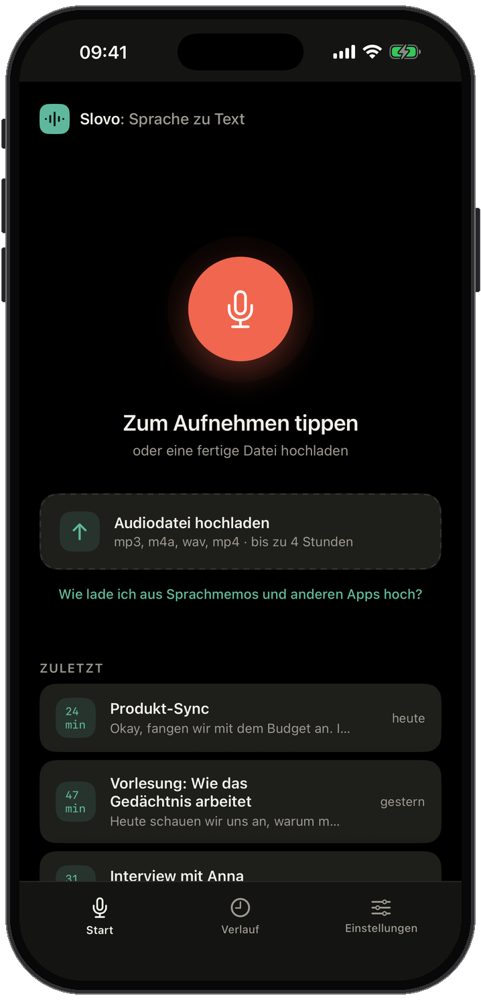
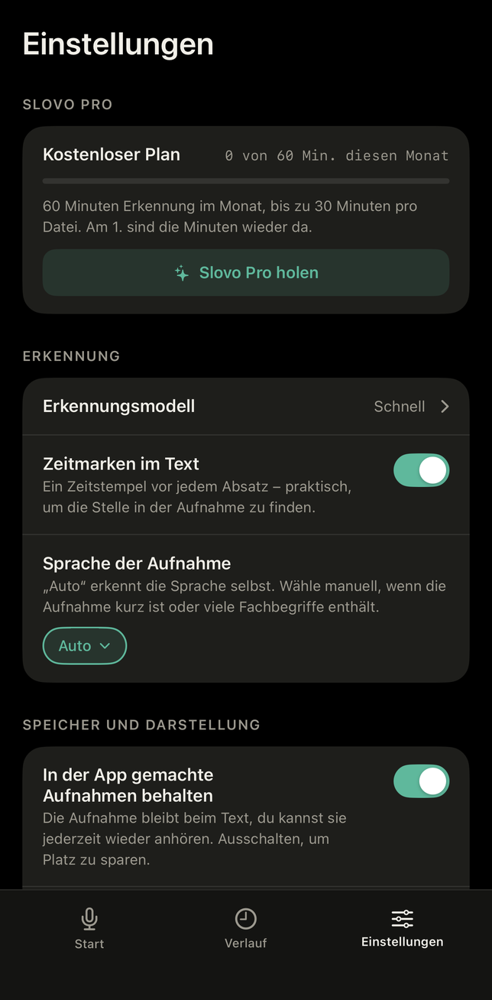

99
Sprachen
Automatische Erkennung, oder du wählst die Sprache selbst. Zwei Modelle stehen zur Wahl: ein schnelles für 25 europäische Sprachen und das genaueste für 99.
Nimm Audio auf oder importiere es und bekomme Text mit Satzzeichen und Zeitmarken. Die Erkennung läuft auf dem Gerät selbst: kein Konto, keine Uploads, kein Internet nötig.
iPhone und iPad, ab iOS 18. Läuft auch auf dem Mac mit Apple Silicon.

Slovo lädt einmal ein Sprachmodell herunter. Danach leben Rekorder, neuronales Netz und Text auf deinem Gerät, mit oder ohne Verbindung.
Cloud-Dienste schicken deine Aufnahme an einen Server. Slovo nicht: Ein neuronales Netz erkennt die Sprache direkt auf dem Gerät, und die Aufnahme bleibt bei dir. Kein Konto, kein Upload – einfach reden.
Audio behalten oder nur den Text lassen, Zeitmarken an oder aus, die Sprache der Aufnahme wählen, synchronisieren oder auf einem Gerät bleiben.

Automatische Erkennung, oder du wählst die Sprache selbst. Zwei Modelle stehen zur Wahl: ein schnelles für 25 europäische Sprachen und das genaueste für 99.
Ein Rekorder in der App, oder jede beliebige Datei: mp3, m4a, wav, mp4. Sprachmemos, Sprachnachrichten aus Chats und Videos kommen über das Teilen-Menü.
Ein ganzes Meeting, eine Vorlesung oder ein Interview in einem Stück. Die Aufnahme läuft im Hintergrund weiter, und der Text erscheint, während du sprichst.
Der Text kommt direkt mit Satzzeichen. Schalte Zeitmarken ein, um zu sehen, zu welchem Zeitpunkt der Aufnahme etwas gesagt wurde.
Transkripte und Audio wandern über deine eigene iCloud zwischen iPhone, iPad und Mac. Oder du schaltest es aus und behältst alles auf einem Gerät.
Cloud-Apps zur Transkription schicken deine Aufnahme an einen Server und erkennen sie dort. Slovo erkennt direkt auf dem Gerät. Das ändert Folgendes.
| Cloud-Dienst | Slovo | |
|---|---|---|
| Wo die Sprache erkannt wird | Auf einem Server | Auf deinem Gerät |
| Wohin das Audio geht | Zum Server des Diensts | Bleibt auf deinem Gerät |
| Wer den Text lesen kann | Der Dienst | Nur du |
| Konto nötig | Ja | Nein |
| Internet nötig | Ja | Nein |
| Wo es gespeichert wird | In der Cloud des Diensts | Auf deinem Gerät und in deiner eigenen iCloud |
Tippe auf den Knopf und sprich. Oder gib eine Datei aus Sprachmemos, Dateien, Fotos oder jeder anderen App mit Teilen-Knopf weiter.
Der Text erscheint, während die Aufnahme noch läuft. Die Aufnahme geht auch weiter, wenn die App im Hintergrund ist, und nach dem Stopp ergänzt Slovo den Rest.
Kopiere ihn als reinen Text oder teile ihn als .txt-Datei in einen Messenger, per Mail oder in Dateien. Die Aufnahme bleibt neben dem Transkript, so lange du willst.
Okay, fangen wir mit dem Budget an. Im letzten Quartal haben wir weniger für Hardware ausgegeben als geplant, also ist Luft für die neuen Mikrofone.
00:41Zweiter Punkt, der Release-Termin. Das Marketing möchte die dritte Oktoberwoche. Die Entwicklung sagt, das ist realistisch, wenn wir die Feature-Liste diesen Freitag einfrieren.
Lade Slovo herunter und nutze es ohne Registrierung: Alle Funktionen stehen dir sofort zur Verfügung. Wenn du mehr brauchst, hebt Slovo Pro die Grenze auf, wie viel Audio erkannt wird.
Details und das, was dir diesen Monat noch bleibt, siehst du in der App.
Die Preise in deiner Währung siehst du in der App. Jederzeit kündbar in deinen App Store-Einstellungen.
Ein einziger Download von etwa 500 MB für das Sprachmodell. Danach funktioniert es überall, auch ohne Empfang.